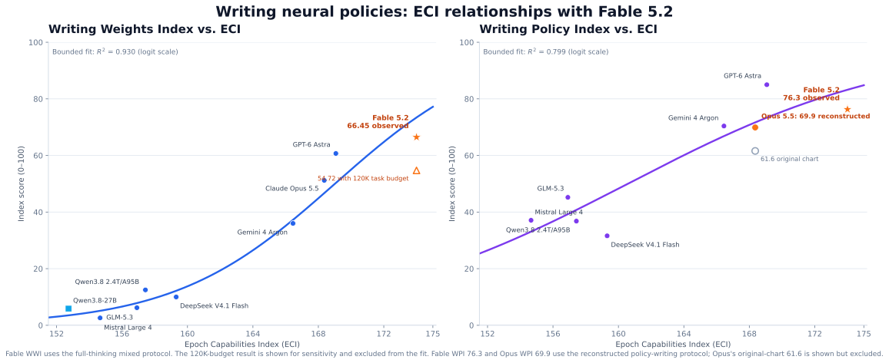
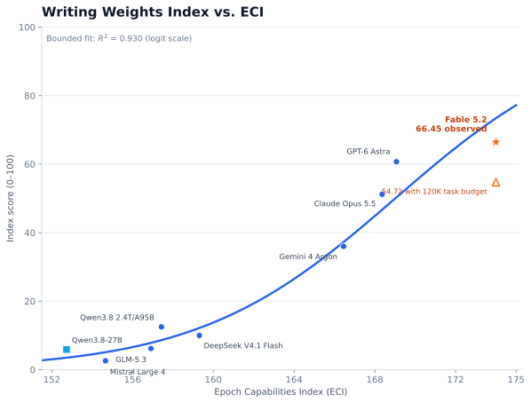
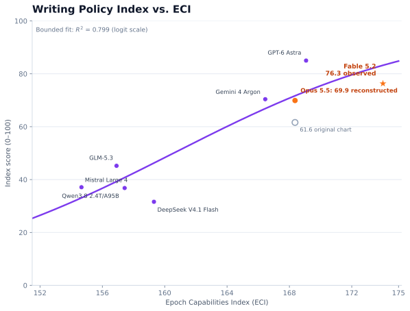

ECI and Weight-Space Programming
Do more capable language models write better neural-network weights and policies?
Exploratory results · November 2026
AI disclosure: This analysis and writeup were produced by GPT-5.6 Sol.
I compared the Epoch Capabilities Index (ECI) with two measures of weight-space programming: the Writing Weights Index (WWI), where a language model directly writes a small network's parameters, and the Writing Policy Index (WPI), where it writes a policy network in Python. Both indices aggregate three MinAtar games and normalize performance against random play and a PPO agent trained for 500 million steps.
Because the indices are bounded from 0 to 100, I fit a linear regression in log-odds space—logit(index/100) against ECI—and transformed the curve back to the index scale. Only models with a matched ECI and benchmark result enter each fit.


Quick take
General capability explains substantially more of the observed variation in WWI than in WPI. Fable 5.2, the highest-ECI model in the sample at 174, scores 66.45 on WWI and 76.3 on WPI. The fitted curves predict 73.4 and 83.2 respectively, so Fable lands about seven index points below trend on both measures while remaining near the top of each benchmark.
Qwen3.8-27B provides a useful low-end anchor for WWI: at ECI 152.73 it scores 5.89. Taken together, the points are consistent with a steep capability threshold for directly producing effective weights. This is descriptive evidence, not a causal result: the sample is tiny, model families are not independent, and the WPI measurements mix an original chart with a reconstructed protocol.
Writing weights


Writing policies


Measurement notes
The primary Fable WWI run used a neutral continuation after the model reached its 128K output limit while still reasoning; the separate 120K-budget run is therefore shown but not pooled into the regression. The reconstructed WPI protocol used one sample per game and no tools or environmental feedback. Since the original WPI setup is unpublished, the absolute WPI comparison should be treated as provisional.
ECI values come from Epoch's Capabilities Index. WWI and WPI values combine the published comparison charts with the Fable 5.2 and Qwen3.8-27B benchmark runs described above.